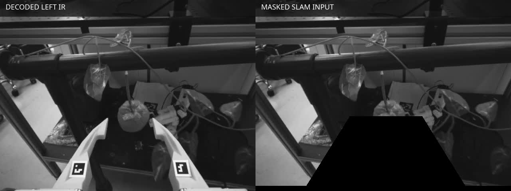
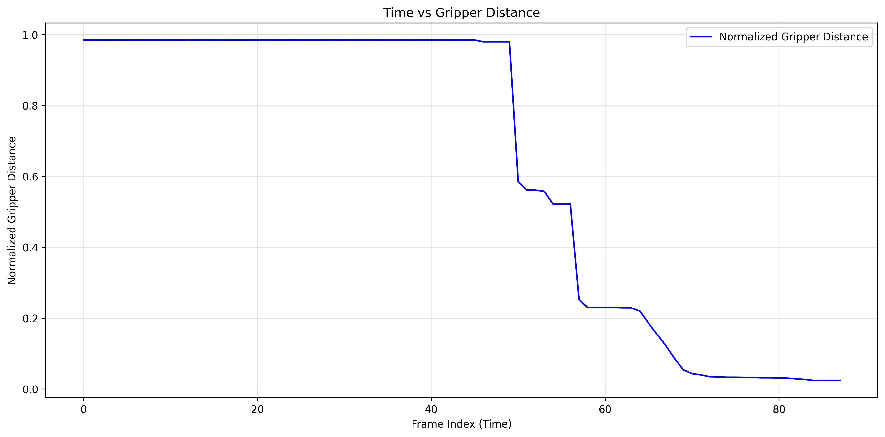

Strawberry-picking demonstrations for end-effector policy learning
Synchronized first-person RGB observations and 7-D end-effector actions derived from handheld SROI V2 demonstrations. This page documents the released LeRobot data, its source recordings, and the processing decisions needed to reproduce it.
The LeRobot repositories are the intended inputs for model development. The MP4 and PNG trees described later are source and processing records, not alternate training releases.
Training
SROI V2 laboratory picking
zfff/sroiv2_strawberry_picking_lab_1459_occlusion
1,459 episodes and 140,522 frames. The release combines a 1,125-episode base set with 177 July and 157 August recordings selected to increase coverage of occluded picking cases.
100 episodes and 9,274 frames from the separate 14 July 2026 recording. All 100 episodes were classified ok by the documented trajectory and gripper QC rules.
Stereo infrared images are used to estimate motion during processing. They are not included in the final observation; the released policy input is the color stream.
Observation
First-person color image
Intel RealSense D405 color frames encoded as AV1 video under observation.images.camera.
video · [480, 640, 3] · yuv420p · 30 fps
Action
Transformed camera pose and gripper opening
For each frame, the target is taken from the following frame; the final frame repeats its own target. Position and rotation are derived from the transformed D405 trajectory.
Interpretation of the metadata. The ee.* labels are a learning-schema convention: the current converter writes the transformed D405 camera pose directly to these fields. The measured camera-to-gripper-tip transform is used for projection-based QC and is not composed into the released action. Likewise, robot_type: so100 is a converter compatibility label; these are handheld SROI demonstrations, not SO-100 joint logs. No joint state or observation.state field is released.
Field
Definition
Type
observation.images.camera
D405 RGB image presented to the policy
video [480, 640, 3]
ee.x / ee.y / ee.z
Camera-trajectory translation after conversion to X-forward, Y-left, Z-up axes
3 × float32
ee.wx / ee.wy / ee.wz
Orientation of the transformed pose represented as a rotation vector
3 × float32
ee.gripper_pos
AprilTag-derived gripper opening; 0 is closed and 1 is open
float32 [0, 1]
task
Task vocabulary entry used by the release
“pick the strawberry”
03 / Processing workflow
From synchronized camera streams to LeRobot episodes
The diagram and records below follow the implementation in sroi_dataprocess. Every visual is derived from validation episode 050 so the intermediate products can be compared directly.
01Captureleft IR · color · right IR
02DecodeMP4 → frame sequences
03Reconstructmasked stereo ORB-SLAM3
04Transformrobot-aligned coordinates
05Estimate gripperAprilTag separation
06QC + convertLeRobot v3.0
Trace example: validation_20260714_160922 / episode_05088 frames · 32.5 cm recovered path · 0 missing gripper frames · QC category: ok
01
Direct acquisition
Record three synchronized D405 streams
The Raspberry Pi recorder uses pyrealsense2 to capture left infrared, color, and right infrared at 640 × 480 and 30 fps. Hardware timestamps and per-stream calibration are stored with each episode. ROS is not part of the current V2 acquisition path.
Tool
record_realsense.py --encode-video
Output
left.mp4, color.mp4, right.mp4, timestamps.json, camera calibration
Raw synchronized recording · left IR / color / right IR · validation episode 050
02
Regenerable workspace
Decode frames without modifying the raw recording
Compressed MP4 streams are expanded into a separate PNG processing tree. Calibration, timestamps, and the generated ORB-SLAM camera configuration remain attached to the episode. The raw MP4 directory is retained as the acquisition record.
Tool
batches/decode_batch.sh / decode_videos.py
Output
left_*.png, color_*.png, right_*.png, times.txt
Raw episode / retained
left.mp4IR1
color.mp4RGB
right.mp4IR2
timestamps.jsonclock
camera_info_*.jsonK, D
PNG workspace / regenerable
left_000000.png …88
color_000000.png …88
right_000000.png …88
times.txt88
orb_slam_*.yamlD405
The MP4 store is the source of truth; decoded frames are a disposable processing product.
03
Stereo reconstruction
Mask the gripper and estimate camera motion
The known finger region is blacked out in temporary copies of both infrared streams. ORB-SLAM3 then reconstructs the camera trajectory from the remaining stereo features, avoiding feature tracks on the moving gripper. Original PNG frames are not altered.
Tools
apply_gripper_mask.py + orbslam_batch_local.sh
Config
configs/gripper_mask_sroi_v2_d405.json
Output
CameraTrajectory.txt in KITTI 3 × 4 pose format

Frame 44 · decoded left IR compared with temporary masked SLAM input
04
Pose convention
Convert the trajectory into robot-aligned axes
The ORB-SLAM trajectory is transformed to the project convention: X forward, Y left, and Z up. Position and orientation from this transformed D405 camera pose become the first six action values during conversion.
Tool
transform_trajectory.py
Output
CameraTrajectoryTransformed.txt
QC view
visualization/visualize_traj_video.py
Projection check and recovered 3-D path · camera-to-tip extrinsics are used only in this QC view
05
Gripper state
Estimate opening from the two finger tags
AprilTag IDs 0 and 15 are detected in the lower region of each color image. Horizontal tag separation provides the raw opening signal, which is clipped and normalized to the [0, 1] convention used by the action vector.
Tool
gripper_estimation_april_tag.py
Output
gripper_distances.txt and normalization provenance where available
Meaning
0 = closed, 1 = open

Episode 050 · normalized opening transitions from approximately 0.98 to 0.03
06
Acceptance and packaging
Review quality and create the LeRobot dataset
QC classifies episodes using trajectory availability and length, gripper validity and variation, and final closure. Selected episodes are converted to AV1 RGB video, Parquet action records, episode indices, task metadata, and aggregate statistics.
Normalization provenance. The 1,459-episode training release records a shared range of 84.0789–261.7803 detector pixels across all merged inputs. The July validation release’s DATA_SOURCES.md instead records a range pooled over its own 100 episodes. Current pipeline documentation recommends the fixed training-reference configuration sroi_v2_d405_1000_onesb_range.json when building new comparable V2 releases. These are distinct provenance statements and should not be conflated.
04 / Provenance
Training release lineage
The final local release record documents both merge operations, input counts, codec compatibility, shared gripper range, and the exact official LeRobot merge command.
Composition of the 1,459-episode release
“Occlusion” in the repository name describes the targeted additions; it does not indicate that every episode in the base collection contains an occlusion.
1,125base set / QC ok
177July additions
157August additions
1,459 episodes · 140,522 frames Official LeRobot merge operation · AV1 video copied unchanged
The original SROI field collection is preserved separately on Zenodo. It uses ROS bags and OAK-D-SR or RealSense D435i sensor configurations; it is not schema-compatible with the V2 LeRobot releases above.
OAK-D-SR configuration
Field stereo RGB and IMU
1280 × 720 stereo RGB at 30 fps with 400 Hz IMU data, camera calibration, and action-segmentation state.
RealSense D435i configuration
Stereo infrared, color, and IMU
848 × 480 left/right infrared and RGB at 30 fps with accelerometer and gyroscope streams.